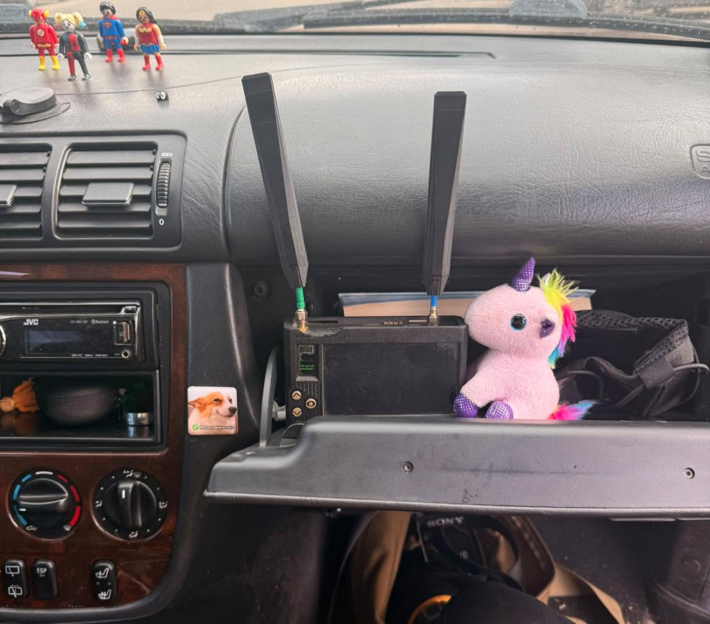
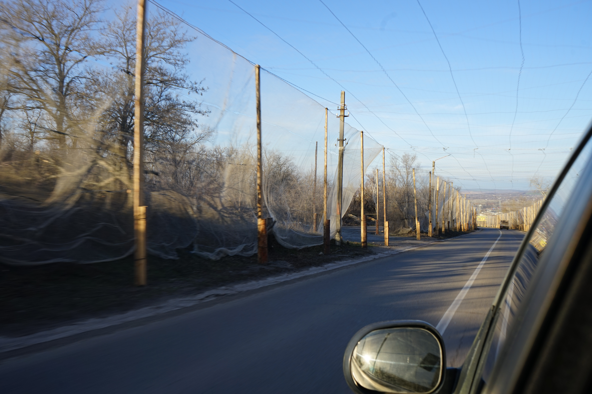

Words from the road
and help.
Simple explanations of humanitarian concepts and reporting from Ukraine. Colloquial terms may have different meanings depending on the context.
This is a basement where almost 100 people lived during the occupation. One person died there. A baby was born in the same place.
We stayed there more than once. We slept in the basement with scared grandmothers, and in the morning we were woken up by KAB explosions.
This is not fiction or a scene from a movie. This was what life was like for people nearby - when we could sit in the safety of our homes and drink tea. There are real human stories behind these words.

- Alarm/alarm signal
- Warning given, for example, by siren, telephone, radio or official channel. After hearing it, check local announcements and follow the instructions of the services.
- Air alarm
- Official warning of a possible air threat. Depending on local rules, it may mean you need to go to shelter or stay in a safe place.
- Security
- It is not a one-time action or a guarantee that nothing bad will happen. It's a process: recognizing threats, preparing simple plans, using proven information and adapting decisions to the situation. It includes both protection against direct attack and preparation for interruptions in the supply of electricity, heating, water or communications.
- Civil security
- Activities that help protect the life and health of people not participating in combat. This includes knowledge of local alarms, a plan for contacting loved ones and knowing where to look for current announcements. It does not require specialized skills or survival equipment.
- Detector
- In our team, the common name for a receiver that detects some radio signals associated with drones and can warn about the threat. It does not detect every drone and does not replace shelter or safety rules. Following the warning, please follow the established plan and local announcements.

Detector mounted in the team's car.
- Targeted donation
- Payment intended for the indicated purpose. Before making a payment, it is worth checking the description of the collection and the rules for using the funds.
- Drone
- Colloquial term for an unmanned aerial vehicle. Drones vary in size, design and purpose: they can be used for observation, photography, transport or military operations. The word itself does not indicate what a specific device is used for.

In the photo, a volunteer is holding the wing of one of the drones. Unmanned aerial vehicles have different designs and may look different. - Fiber optic drone
- A drone controlled by a thin fiber-optic cable unwound during flight, instead of a regular radio link. This may make jamming the radio signal ineffective, but it does not mean that it is immune to all threats.
- Evacuation
- Organized departure from a hazardous location and movement to a safer location. It may be temporary or permanent. Evacuation advice should come from local authorities.
- Shock wave (blast wave)
- A sudden change in pressure that propagates from the point of explosion. It can be felt as a sudden, strong blow that passes through the body. This is a very unpleasant experience; The wave may damage, among others: lungs, hearing and internal organs, and in severe cases lead to death. The effects depend on, among others: on the force of the explosion, distance and shields.
- FPV
- An abbreviation for "first-person view". The operator controls a small, agile drone by observing the image from the camera on the device. In war conditions, FPV drones are used to attack targets, including vehicles. It is a definition of a method of observation and control, not a single model.
- Human safari
- A term describing hunting of people (civilians) using drones and the everyday fear of attack. This is a civilian term, not a legal term. UN report from Kherson ↗
- CABLE
- An abbreviation of the Russian "корректируемая авиационная бомба", i.e. corrected aviation bomb. In reports from the war in Ukraine, this term is also used to refer to bombs dropped from planes and corrected in flight. It happens that we arrive and spend the night in cities where about 40 such bombs fall in one night.
The payload depends on the variant - in some bombs it can be around 250 kg. Recently, a FAB-3000 class bomb with a guidance module was also dropped. Its total weight is about 3 tons, but the explosive itself weighs less - about 1.2-1.4 tons. ArmyInform: information about FAB-3000 ↗ - Kill zone
- In military terms, a place where fire is concentrated during an ambush. In Szalik's accounts, we also use this name for areas close to the front line, approximately up to about 25 km. This is an approximation - the actual scope of the threat depends on the place and situation, not on one fixed boundary. Drones can also attack much further, even about 50 km from the front line. We also reach such areas.
- Humanitarian convoy
- Group of vehicles carrying humanitarian aid or personnel. The organization of the journey depends on the arrangements and current safety conditions.
- Frontline
- Conventional definition of the area along which the warring parties meet. It is not a fixed or always precise line on the map; may change, and the distance from it alone does not determine the level of threat.
- Emergency communications
- An agreed way to contact your loved ones when regular calls don't work. It may include designating a contact person, a back-up communication channel, and determining where to forward the message.
- Medevac
- An abbreviation for "medical evacuation" - the medical evacuation of an injured or sick person to a place where they can receive appropriate care.
- Unexploded explosive
- Ammunition or other dangerous item that did not explode. Don't touch him or come close to him. Report the find to the services from a safe distance.
- Civil protection
- Preparation and actions of services, institutions and communities to protect people against threats. They may include warning, shelter, evacuation, rescue and the provision of basic services.
- Civil person
- A person who does not belong to the armed forces or an organized armed group. Civilians are protected by international humanitarian law from the effects of hostilities.
- Person in crisis
- A person whose safety, health or basic living conditions have been seriously affected by conflict, violence, disaster or other difficult situation. The term describes a situation and needs, not the whole person.
- Direct Help
- Giving needed items, services or support to people who need them. Effective help takes into account the voice and situation of these people and changes with their needs.
- Humanitarian aid
- Support for people affected by war, disaster or other crisis. It may include food, water, medicine, shelter, transportation and information. Its goal is to save lives, alleviate suffering and protect dignity.
- In-kind assistance
- Items donated to people in need or to organizations, such as food, hygiene products, clothing or equipment. Before purchasing, it is worth checking your current needs to ensure that the donated items are really useful.
- International humanitarian law
- A set of rules that, during armed conflict, are intended to protect persons not or no longer involved in combat and to limit the effects of hostilities.
- Utility supply interruption
- Lack or limitation of access to services such as electricity, heating, water or communications. During war, it may result from damage to infrastructure or other disruptions and pose a real threat to health and life.
- Resettlement
- Forced or involuntary leaving one's home or place of habitual residence, for example because of conflict, violence or disaster. An internally displaced person remains within the borders of his or her country; in English it is abbreviated as IDP. A refugee, on the other hand, seeks protection outside his country.
- Shahed
- Name of a family of unmanned aerial vehicles produced in Iran. The Shahed-136 is a disposable strike drone: it flies towards a target and explodes on impact. In Russian materials it is sometimes referred to as Geran-2. The name Shahed can mean different models.
- Anti-drone net
- A mesh that extends over a road or object to make it more difficult for FPV drones to reach the target. Does not provide full protection - some drones still pass through.

Anti-drone net over the road.
- РЕБ (radio-electronic warfare / WRE)
- Ukrainian abbreviation for electronic warfare. Indicates activities and devices that use radio waves to disrupt or protect communications, navigation and other electronic systems. Effectiveness depends on the type of device and situation - not every drone can be stopped in this way.

Car with REB devices installed during escort. 
Passage under the cover of an anti-drone net. We cannot afford our own REB devices. During this trip, the army accompanied us as an escort. When we have the opportunity to use a military escort, we use it. At every step we try to reduce risk as much as possible.
- Tactical tourniquet / tourniquet
- A special tourniquet used to stop life-threatening bleeding from a limb. Its use requires appropriate equipment and training; in an emergency situation, call for medical help.
- Combat operations zone
- An area where hostilities are taking place or where there is an immediate threat of hostilities. Its limits depend on the place and situation. The development of drones and other technologies means that the threat may reach far beyond the front line. Evacuation of the wounded there can be very difficult, and sometimes impossible.
- Gray area
- An area where control of the terrain is uncertain or changing, and movement may be particularly dangerous. There is no fixed width or exact border - it depends on the section of the front and the current situation.
- Shelter
- A facility or space designed to protect people from specific hazards. Which places are available and suitable are determined by local authorities and services.
- Shelter
- A place where you can find temporary protection and meet your basic needs. This may be a designated shelter, safe room or evacuation center, depending on the situation and local recommendations.
- Emergency shelter
- Temporary place to stay when returning home is impossible or unsafe. It should provide basic protection, privacy and access to essential services.
- Refugee
- A person who has left his or her country and needs protection abroad, for example because of war or persecution. This concept has a specific legal meaning; not every person crossing the border automatically obtains refugee status.
- Internal displacement
- A situation in which people have to leave their homes but do not cross an international country border. They may need help finding a safe place, accessing health care, education, documents and livelihoods.
- Checkpoint/blockpost
- Colloquial term for the point at which services check people or vehicles. Please follow the instructions of authorized services and local announcements.

The point visible in the photo no longer exists. This is an archival photo of an old item, added here as an exception. We usually do not publish such photos because they could reveal the location.
- Volunteering
- Voluntary action for the benefit of other people or the common good. In humanitarian aid, it also means responsibility for the safety, privacy and dignity of people helped.
- The two-wall rule
- An emergency tip if you are startled by an alarm and cannot safely get to shelter: choose an interior room without windows, with at least two solid walls separating you from the outside space. If you have time and a safe route, shelter should be your first choice. The two-wall rule limits some of the threats, but does not guarantee protection, especially in the event of a direct hit. Always follow local announcements and instructions from the services.
Sources and further reading: UNHCR Dictionary ↗ · UNHCR Dictionary Ukraine ↗ · International humanitarian law - ICRC ↗ · Internally Displaced Persons - ICRC ↗ · Shahed-136 as a expendable strike drone - US Department of State ↗ · First aid for hemorrhage - ZPE ↗ · Tourniquet - American Red Cross ↗ · Fiber Optic Controlled Drones - NATO ACT ↗ · Fundamentals of РЕБ - Educational Resource 31. NGU ↗ · Military Symbols, FM 1-02.2 - U.S. Army ↗ · Ukrainian analysis of the scope of drone threats (PDF) ↗ · Ministry of Health of Ukraine on the evacuation of the injured ↗. We have shortened the definitions and translated them into simple language. Colloquial terms are not legal terminology.